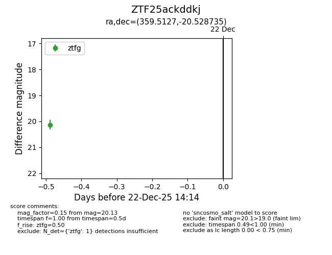
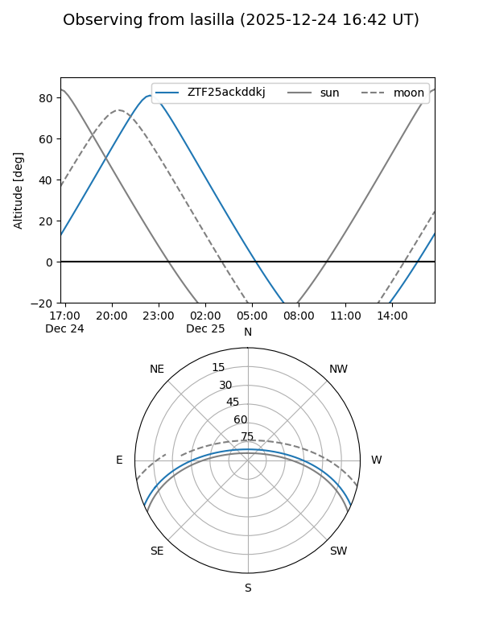

ZTF25ackddkj
Target ZTF25ackddkj at 2025-12-31 17:00
Aliases and brokers:
FINK:
Lasair:
ALeRCE:
alt names
ZTF25ackddkj (ztf,fink_ztf)
Coordinates:
equatorial (ra, dec) = 359.5127,-20.52873
equatorial (HMS+DMS) = 23:58:03.04,-20:31:43.44
galactic (l, b) = (58.4923,-76.13479)
Flags:
Photometry:
last ztfg=20.13
1 ztfg detections
Lightcurve

Visibility


Additional plots